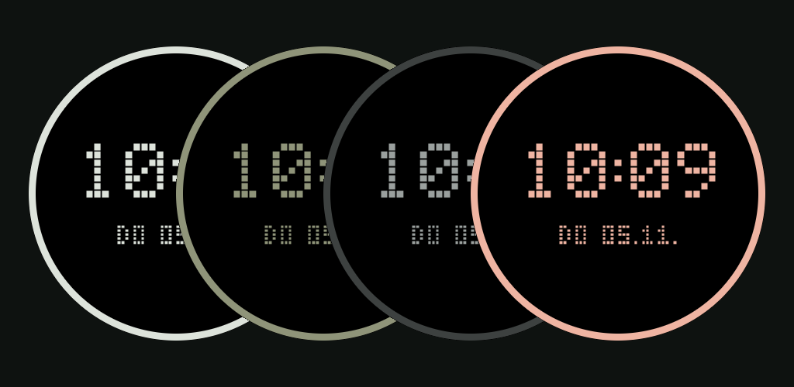

Retro Dot

- Fog
- Olive
- Obsidian
- Canyon
Ein Wear-OS-Watchface, das die Uhrzeit in großen Pixelziffern im LCD-Stil zeigt, darunter klein das Datum. Vier Farben passend zu den Gehäusefarben der Pixel Watch (Fog, Olive, Obsidian, Canyon), je in zwei Stilen: schwarzer Hintergrund mit Pixeln in der Uhrenfarbe oder Hintergrund in der Uhrenfarbe mit dunklen Pixeln. Der Always-on-Modus nutzt hohle Pixel. Offline, ohne Werbung, ohne Datenerhebung.
A Wear OS watch face that shows the time in big LCD-style pixel digits with the date in small pixel letters below. Four colours matching the Pixel Watch case colours (Fog, Olive, Obsidian, Canyon), each in two styles: black background with pixels in the watch colour, or a background in the watch colour with dark pixels. The always-on mode uses hollow pixels. Offline, ad-free, no data collection.